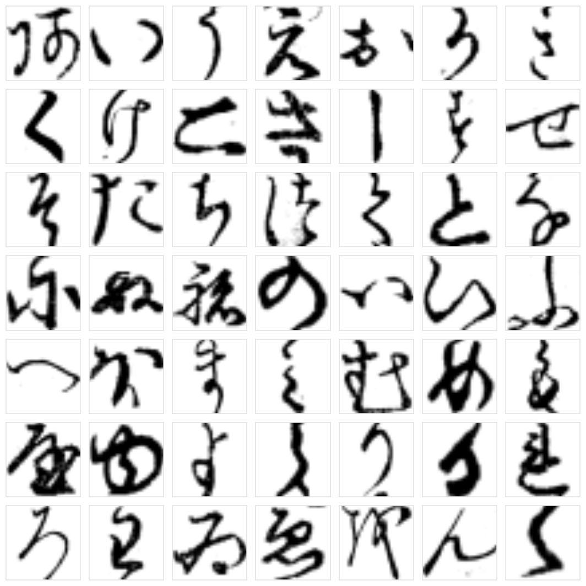
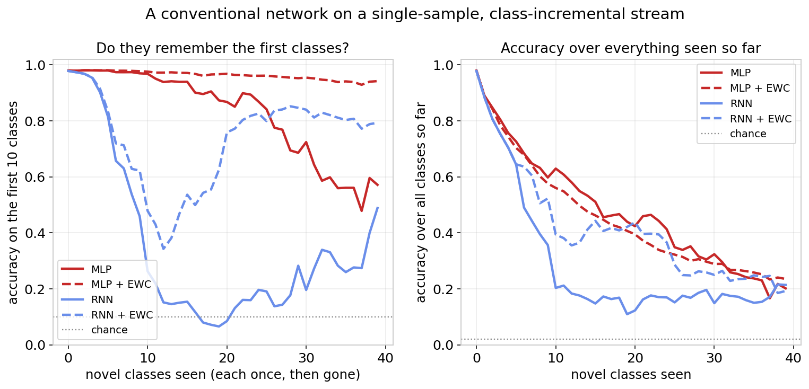
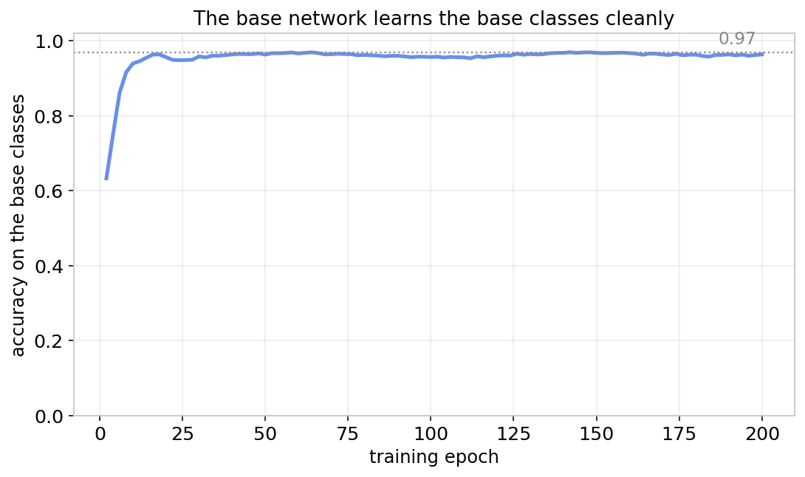
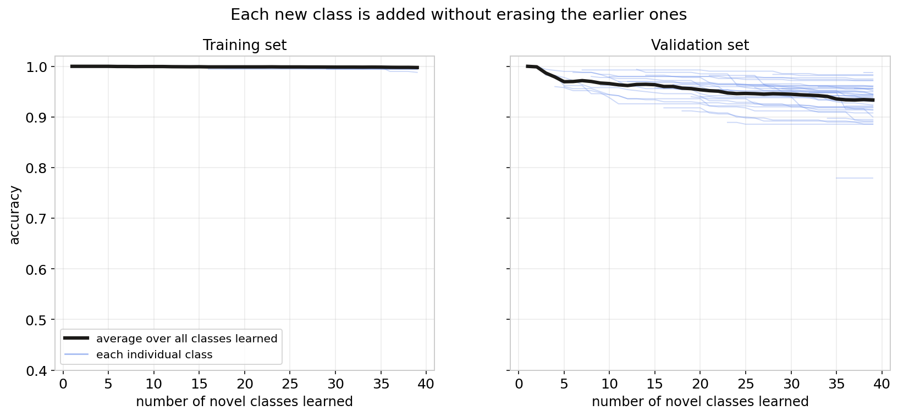
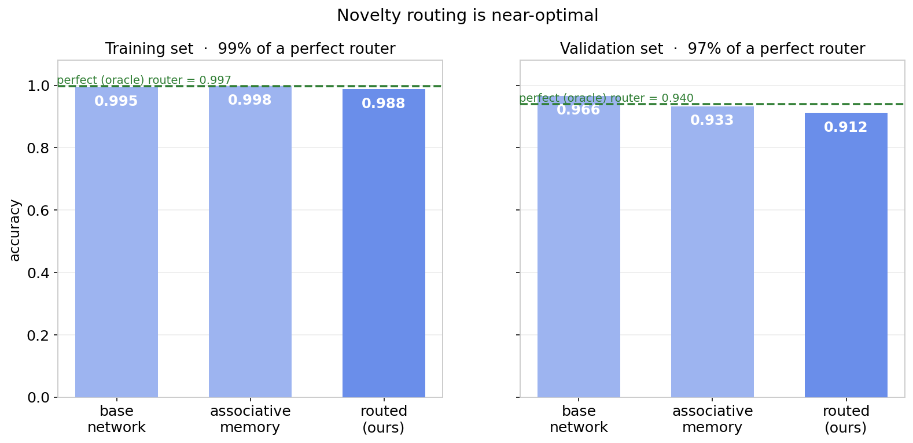
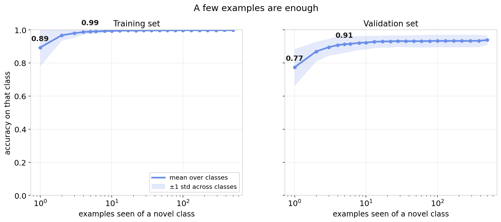

After the data wall
A lot of the field is organized around one idea: get more data. Data is turning into its own industry, and world models promise to manufacture experience wherever real data runs short. That work is worth doing. But imagine it all succeeds and data is no longer the limit. A system that has to act in the physical world still meets the sim-to-real gap. The distribution it trained on is never quite the distribution it wakes up in.
Closing that gap has less to do with data than with learning. A deployed system runs into situations no dataset planned for, and it has to absorb them while it operates, without unraveling what it already knew. Continual, online adaptation like this is one of the oldest unsolved problems in neural networks. We think this problem, not data, is what stands between today's models and real autonomy.
A systems-level answer
Continual learning already has a strong blueprint, and it comes from the brain. Biology does not solve online learning with a single network. It uses two that work together. A fast-learning hippocampus captures new experience in one shot, and a slow-learning cortex folds that experience into stable, general structure over time. This is the Complementary Learning Systems (CLS) methodology. What matters is that it is a systems-level answer: the capability comes from how the parts are arranged, not from a clever loss function. Most of the field is not building this way, and we think that is a mistake.
A working CLS rests on five pillars. We will build each one as we go.
- Avoid catastrophic forgetting in the primary network. Freeze it once pretraining is done.
- Keep entries in the secondary network from corrupting each other. Read and write to the associative memory sparsely.
- Engage the secondary network only when it is needed. Route at inference by novelty.
- Sample-efficient online learning at deployment. Make the secondary network an associative memory.
- Free up room in the secondary network over time. Consolidate into the base network, through the replay of compressed patterns.
The task
To test any of this honestly, the benchmark has to look like the world rather than a shuffled dataset. We use Kuzushiji-49, a set of 49 cursive Japanese characters drawn from historical woodblock-printed books. Each character is a 28 by 28 grayscale image, and the handwriting is genuinely varied. Here is one example of each of the 49 classes.

The hard part is how the data arrives. Real streams are single-sample, meaning you see one example at a time instead of a batch, and they are badly non-IID. You get flooded with one kind of input, it disappears, and it may never come back, yet you still had to learn it. We reproduce this directly. A system learns the first ten classes up front, the way pretraining works before deployment. Then the other 39 classes arrive as a stream: every example of one new class, then never again, then the next class, and so on. After each new class we check how much of everything earlier the system still knows. This single-sample, class-incremental setting is widely considered one of the hardest in continual learning.
How standard networks do
Ordinary networks fail this right away. We trained two of them on the stream, a multilayer perceptron and a recurrent network, and then added a standard remedy, Elastic Weight Consolidation, to both. All four collapse. Learning a new class overwrites the weights the earlier classes needed, and with none of the old data present, nothing pulls those weights back. EWC does not save it. It can protect the old classes only by refusing to learn the new ones, so its accuracy over everything stays just as low.

Our approach
Our system is the first Complementary Learning System we have built on top of EGTO, our energy-based architecture. It has three parts, and they line up with the blueprint above: a base network learned during pretraining, an associative memory that takes on the novel classes, and a router that decides, per input, which one to trust.
Keeping the systems separate is what makes this work, and it is where EGTO pays off. An energy-based model reports, on its own, how well an input fits what it already knows, so the question "is this new?" is a measurement the architecture already makes.
The base network
The base network is what we build before anything is deployed. There is not much to say about it, which is the point. It learns the base classes cleanly and reaches strong accuracy.

Deployment is the moment we stop pretraining and put the system to work. At that moment we freeze the base network. It is never touched by gradient descent again. If the base never changes, it cannot forget.
Learning new classes
New classes never touch the frozen base. Each one is written into the associative memory instead. Training on all 39 novel classes one at a time produces the plot the baselines could not.

Because each class is a separate entry in the associative memory, storing a new one does not compete with the classes already there. The memory learns online, one shot at a time, and keeps everything it has already stored. The catastrophic forgetting we saw earlier is a property of gradient descent on shared weights, not of learning new things.
One subtler failure is left to rule out. Even a memory can smear its entries together, so that writing one class quietly damages another. We avoid that by reading and writing the memory sparsely, so each class lives in a nearly separate part of it. Together with the frozen base, this means we never modify the information the earlier classes rely on. In principle all of it is preserved, as long as we route to it correctly at inference.
Routing
That condition, routing correctly, is the whole game at inference. For each input the system has to decide whether the frozen base already handles it or whether it belongs to the memory, and it has to decide without the label. Good routing makes the preserved knowledge usable. Bad routing wastes it. EGTO's energy gives a clean novelty signal, and the routing lands close to optimal. Across all 49 classes the routed system recovers about 97% of what a perfect router would get.

Sample efficiency
The last question is the one a real stream cares about most. When a new class shows up, how many examples does it take to learn it? If the answer is hundreds, you have not solved online learning, because the input will be long gone. Here a single example already carries most of the way, and a few more finish the job.

What comes next
Four of the five pillars are complete. The memory learns new classes online, in one shot, without forgetting and without disturbing the frozen base, and the system knows when to reach for it. The pillar we have not built yet is consolidation: the transfer of information from associative memory to the base network.
Biology implements consolidation by slowly moving stable patterns out of the fast memory and into the base network, which frees the memory to keep learning. It does this through replaying compressed patterns. Consolidation from the memory back into the base is where much of our current work is going, and it is the natural next step for the architecture behind everything above.
EGTO is the perfect starting point for our research, as Energy-Based Models inherently represent the training data from which the landscape was crafted. This allows a rather straightforward path towards preserving the representation of that training data inside the network. We strive to engineer a stable, robust, and complete consolidation architecture that can non-destructively merge the policy of the associative memory into the base network.